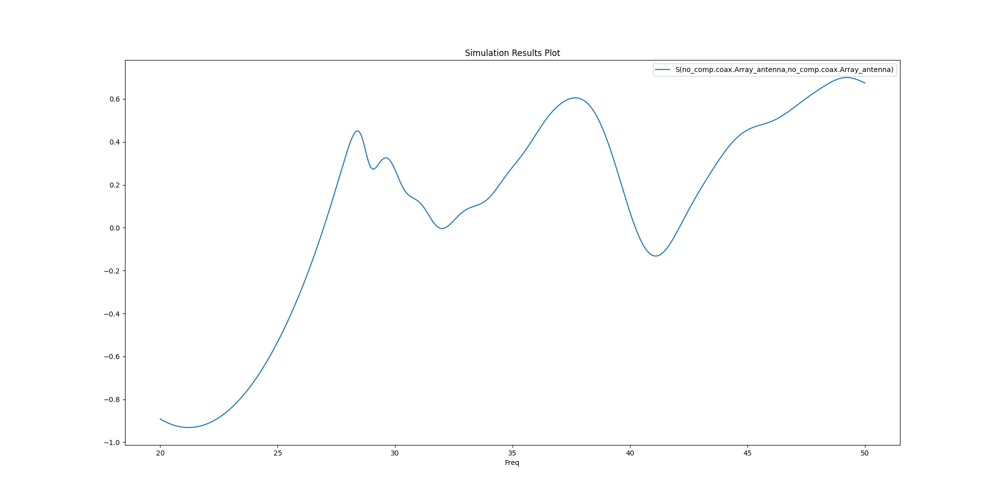

Note
Click here to download the full example code
EDB: 5G linear array antenna#
This example shows how you can use HFSS 3D Layout to create and solve a 5G linear array antenna.
Perform required imports#
Perform required imports.
import tempfile
import pyaedt
import os
Set non-graphical mode#
Set non-graphical mode. The default is False.
non_graphical = False
class Patch:
def __init__(self, width=0.0, height=0.0, position=0.0):
self.width = width
self.height = height
self.position = position
@property
def points(self):
return [
[self.position, -self.height / 2],
[self.position + self.width, -self.height / 2],
[self.position + self.width, self.height / 2],
[self.position, self.height / 2],
]
class Line:
def __init__(self, length=0.0, width=0.0, position=0.0):
self.length = length
self.width = width
self.position = position
@property
def points(self):
return [
[self.position, -self.width / 2],
[self.position + self.length, -self.width / 2],
[self.position + self.length, self.width / 2],
[self.position, self.width / 2],
]
class LinearArray:
def __init__(self, nb_patch=1, array_length=10e-3, array_width=5e-3):
self.nbpatch = nb_patch
self.length = array_length
self.width = array_width
@property
def points(self):
return [
[-1e-3, -self.width / 2 - 1e-3],
[self.length + 1e-3, -self.width / 2 - 1e-3],
[self.length + 1e-3, self.width / 2 + 1e-3],
[-1e-3, self.width / 2 + 1e-3],
]
tmpfold = tempfile.gettempdir()
aedb_path = os.path.join(tmpfold, pyaedt.generate_unique_name("pcb") + ".aedb")
print(aedb_path)
edb = pyaedt.Edb(edbpath=aedb_path, edbversion="2023.1")
D:\Temp\pcb_P7YX90.aedb
Add stackup layers#
Add the stackup layers.
if edb:
edb.stackup.add_layer("Virt_GND")
edb.stackup.add_layer("Gap", "Virt_GND", layer_type="dielectric", thickness="0.05mm", material="Air")
edb.stackup.add_layer("GND", "Gap")
edb.stackup.add_layer("Substrat", "GND", layer_type="dielectric", thickness="0.5mm", material="Duroid (tm)")
edb.stackup.add_layer("TOP", "Substrat")
Duroid (tm) does not exist in material library
Create linear array#
Create the first patch of the linear array.
first_patch = Patch(width=1.4e-3, height=1.2e-3, position=0.0)
edb.modeler.create_polygon(first_patch.points, "TOP", net_name="Array_antenna")
# First line
first_line = Line(length=2.4e-3, width=0.3e-3, position=first_patch.width)
edb.modeler.create_polygon(first_line.points, "TOP", net_name="Array_antenna")
<pyaedt.edb_core.edb_data.primitives_data.EDBPrimitives object at 0x000002288102B7F0>
Patch linear array#
Patch the linear array.
patch = Patch(width=2.29e-3, height=3.3e-3)
line = Line(length=1.9e-3, width=0.2e-3)
linear_array = LinearArray(nb_patch=8, array_width=patch.height)
current_patch = 1
current_position = first_line.position + first_line.length
while current_patch <= linear_array.nbpatch:
patch.position = current_position
edb.modeler.create_polygon(patch.points, "TOP", net_name="Array_antenna")
current_position += patch.width
if current_patch < linear_array.nbpatch:
line.position = current_position
edb.modeler.create_polygon(line.points, "TOP", net_name="Array_antenna")
current_position += line.length
current_patch += 1
linear_array.length = current_position
Add ground#
Add a ground.
edb.modeler.create_polygon(linear_array.points, "GND", net_name="GND")
<pyaedt.edb_core.edb_data.primitives_data.EDBPrimitives object at 0x0000022881222DF0>
Add connector pin#
Add a central connector pin.
edb.padstacks.create(padstackname="Connector_pin", holediam="100um", paddiam="0", antipaddiam="200um")
con_pin = edb.padstacks.place(
[first_patch.width / 4, 0],
"Connector_pin",
net_name="Array_antenna",
fromlayer="TOP",
tolayer="GND",
via_name="coax",
)
Add connector ground#
Add a connector ground.
edb.modeler.create_polygon(first_patch.points, "Virt_GND", net_name="GND")
edb.padstacks.create("gnd_via", "100um", "0", "0", "GND", "Virt_GND")
con_ref1 = edb.padstacks.place(
[first_patch.points[0][0] + 0.2e-3, first_patch.points[0][1] + 0.2e-3],
"gnd_via",
fromlayer="GND",
tolayer="Virt_GND",
net_name="GND",
)
con_ref2 = edb.padstacks.place(
[first_patch.points[1][0] - 0.2e-3, first_patch.points[1][1] + 0.2e-3],
"gnd_via",
fromlayer="GND",
tolayer="Virt_GND",
net_name="GND",
)
con_ref3 = edb.padstacks.place(
[first_patch.points[2][0] - 0.2e-3, first_patch.points[2][1] - 0.2e-3],
"gnd_via",
fromlayer="GND",
tolayer="Virt_GND",
net_name="GND",
)
con_ref4 = edb.padstacks.place(
[first_patch.points[3][0] + 0.2e-3, first_patch.points[3][1] - 0.2e-3],
"gnd_via",
fromlayer="GND",
tolayer="Virt_GND",
net_name="GND",
)
Add excitation port#
Add an excitation port.
edb.padstacks.set_solderball(con_pin, "Virt_GND", isTopPlaced=False, ballDiam=0.1e-3)
port_name = edb.padstacks.create_coax_port(con_pin)
Plot geometry#
Plot the geometry.
edb.nets.plot(None)
Save and close Edb instance prior to opening it in Electronics Desktop.#
Save EDB.
edb.save_edb()
edb.close_edb()
print("EDB saved correctly to {}. You can import in AEDT.".format(aedb_path))
EDB saved correctly to D:\Temp\pcb_P7YX90.aedb. You can import in AEDT.
Launch HFSS 3D Layout and open EDB#
Launch HFSS 3D Layout and open EDB.
h3d = pyaedt.Hfss3dLayout(projectname=aedb_path, specified_version="2023.1", new_desktop_session=True,
non_graphical=non_graphical)
Plot geometry#
Plot the geometry. The EDB methods are also accessible from the Hfss3dlayout class.
h3d.modeler.edb.nets.plot(None)

Create setup and sweeps#
Getters and setters facilitate the settings on the nested property dictionary. Previously, you had to use these commands:
setup.props["AdaptiveSettings"]["SingleFrequencyDataList"]["AdaptiveFrequencyData"]["AdaptiveFrequency"] = "20GHz"setup.props["AdaptiveSettings"]["SingleFrequencyDataList"]["AdaptiveFrequencyData"]["MaxPasses"] = 4
You can now use the simpler approach that follows.
setup = h3d.create_setup()
setup["AdaptiveFrequency"] = "20GHz"
setup["AdaptiveSettings/SingleFrequencyDataList/AdaptiveFrequencyData/MaxPasses"] = 4
h3d.create_linear_count_sweep(
setupname=setup.name,
unit="GHz",
freqstart=20,
freqstop=50,
num_of_freq_points=1001,
sweepname="sweep1",
sweep_type="Interpolating",
interpolation_tol_percent=1,
interpolation_max_solutions=255,
save_fields=False,
use_q3d_for_dc=False,
)
<pyaedt.modules.SolveSweeps.SweepHFSS3DLayout object at 0x0000022892C4F400>
Solve setup and create report#
Solve the project and create a report.
<pyaedt.modules.report_templates.Standard object at 0x0000022881090160>
Plot results outside AEDT#
Plot results using Matplotlib.
<Figure size 2000x1000 with 1 Axes>
Close AEDT#
After the simulation completes, you can close AEDT or release it using the
pyaedt.Desktop.release_desktop() method.
All methods provide for saving the project before closing AEDT.
h3d.save_project()
h3d.release_desktop()
True
Total running time of the script: ( 3 minutes 33.511 seconds)